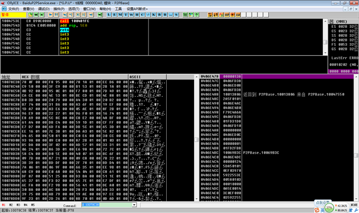

加密协议逆向¶
加密数据破解工具¶


加密数据解析步骤¶
查壳
利用Peid查看软件是否加壳，如果没有加壳则直接进入软件跟踪其数据请求交换过程，否则需要使用工具或手工脱壳，然后再进行跟踪分析。
＊ 动态和静态调试
使用Ollydgb(WinDbg)加载软件并设置数据包接收和发送断点，当找到接收或发送的数据后进行单步跟踪，同时结合Ida工具查看函数伪代码，最终找到数据传输的加解密算法。
编写代码
将算法写成代码对原始数据解密并对明文信息进行分析，最终提取关键特征或关键信息。 写出wireshark插件
实例讲解¶
本次以百度影音为例进行讲解，通过反汇编跟踪找到百度影音的解密算法如下，详细跟踪过程见下文。
百度影音解密算法描述
- 密钥生成过程
程序启动时，将生成秘钥放着全局变量KEY中
- 解密过程：
根据KEY与对应未知进行异或
OD动态调试¶
打开OllyDbg软件选择文件附加然后选择如下红色标记的BaiduP2PService进程，并点击附加按钮

设置接收数据函数断点，然后按F9运行，此时程序会运行到接收数据函数处，如下图所示 recvfrom
接着按快捷键接收数据，并设置内存访问断点然后跟踪这个接收数


IDA静态分析 提取代码¶
利用Ida找到密钥的生成函数并生成伪代码，并结合OllyDbg分析密钥生成函数，下面为Ida伪代码图

发现使用了byte_10078C38这个变量，必然为全局变量，使用OD查看10078C38内存

利用Ida找到数据包解密函数00470CE0处生成其伪代码，并结合OllyDbg分析解密函数，下面为Ida伪代码

wireshark插件编写(也可以自己写代码)¶
根据解密写wireshark插件,原数据与解密数据对比 .. figure:: img/wireshark_01.png .. figure:: img/wireshark_02.png